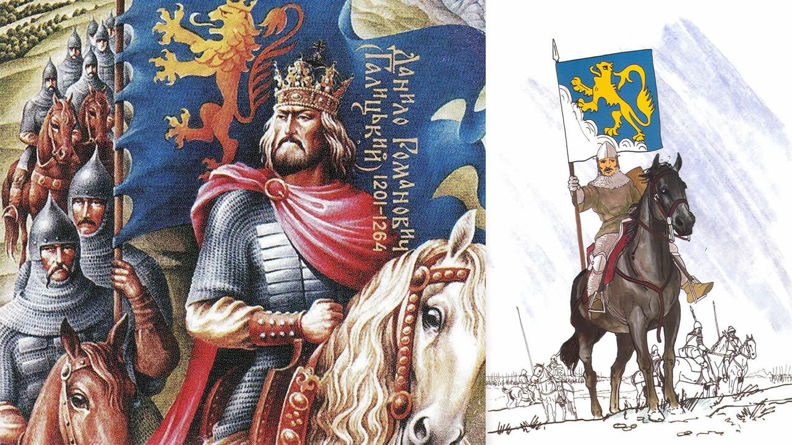

Львів – місто обласного підпорядкування на Україні, обласний центр Львівської області, національно-культурний та освітньо-науковий центр, великий промисловий центр і транспортний вузол. За чисельністю населення – сьомий місто країни (на 1 березня 2015 року – 728 545 осіб наявного населення). Львів заснований галицьким князем Данилом Романовичем в середині XIII століття. Близько 1272 року місто стало столицею Галицько-Волинського князівства, надалі також було столицею Королівства Русь, Королівства Галичини і Лодомерії, Західно-Української Народної Республіки, Української держави. Історичний центр Львова внесений до списку Всесвітньої спадщини ЮНЕСКО. У місті знаходиться найбільша кількість пам’яток архітектури в Україні. У 2009 році Львову присвоєно звання Культурної столиці України. Місто періодично займає провідні місця в рейтингах туристичної та інвестиційної привабливості. Назва міста Назва «Львів» дана місту на честь князя Лева Даниловича, сина засновника Львова Данила Галицького. Впродовж всієї своєї історії місто жодного разу не змінювало назви. Щодо Львова традиційними є багато епітетів. Розповсюдженою є назва «Місто Лева». Час від часу вживаються такі порівняння, назви та словосполучення, як «місто левів», «місто сплячих левів», «Королівське місто», «Перлина корони Європи», «Місто-музей», «столиця Галичини», «маленький Париж», «маленький Відень», «український П’ємонт», «Бандерштадт», «культурна столиця України» та інші. Хронологія подій До 1340 p – Руське Королівство. Львів у складі Галицько-Волинського князівства Панорама Львова 1618 року 1247 рік – існує гіпотиза, що місто засноване Данилом Романовичем в 1247 році з нагоди одруження Лева Даниловича з угорською принцесою Констанцією, дочкою короля Бели IV. За роки незалежності, на підставі аналізу джерельних матеріалів, Іван Паславський обґрунтував версію про заснування Львова у 1240 році. Мечислав Орлович вказував, що заснування, міста 1240 року певне було пов’язане з жорстоким зруйнуванням княжого Галича 1241 року. 1253 рік – Данило Романович коронований як король Русі. Це означало, що відтепер він перестав вважатися васалом Золотої Орди. Король повсюди будує фортеці, однією з них був Львів. Його столиця була в Холмі, на заході Галицько-Волинської держави, біля польського кордону. Відтепер «старшим» престолом вважався галицький, який був удостоєний королівської традиції. За Галичиною закріпилася назва «Русь». «Молодшим», князівським, престолом був волинський. 1256 рік – перша літописна згадка про Львів. Перша письмова міститься у Галицько-Волинському літописі і датується 1256 роком, від якого і ведеться міське літочислення. Руський Львів складався з дитинця (Високого замку), королівської резиденції (Низького замку) та укріпленого подолу в районі сучасної площі Старий Ринок. 1272 рік – король Лев I Данилович переніс столицю Галицько-Волинської держави з Холма до Львова. Тут також, ймовірно, знаходився фактичний осідок митрополитів Галицьких, предстоятелів окремої митрополії Константинопольського патріархату, що існувала з перервами від 1303 до 1401 року. 1301 рік – Лев помер в 1301 році монахом у монастирі у Лаврові в Карпатах, де й був похований. У той час в Золотій Орді почалися чвари і син і наступник Лева I Даниловича Юрій І Львович зміг позиціонувати себе незалежним володарем і коронуватися королівською короною. У 1303 році він домігся від Константинопольського патріарха заснування окремої Галицької митрополії, оскільки Київська митрополія перебралася до Владимира-на-Клязьмі, що належав Золотій Орді. 1308 рік – скоро в Орді зміцніла влада хана Узбека. Це збіглося зі смертю Юрія І Львовича близько 1308 року. Його наступники сини Андрій і Лев (одному з них дістався галицький престол, іншому – волинський) вели війни за незалежність від Золотої Орди і загинули. Після них на престол сів їхній племінник (небіж) князь Юрій ІІ Болеслав, пов’язаний із польською князівською династією. Спочатку гарнізон Львова у 1324 році навіть не хотів відчинити перед ним браму. Зміцніло Польське королівство – Юрій ІІ Болеслав змушений був лавірувати поміж ним і Ордою. 1340-1349 – Львів під владою боярської олігархії Дмитра Детька з Перемишля і Данила з Острова Дмитро Дедько́ – галицький боярин, був фактичним правителем королівства 1340 рік – після смерті галицько-волинського князя Юрія II Болеслава волинські бояри проголосили правителем Дмитра-Любарта Гедиміновича. Того ж року король Польщі Казимир ІІІ напав на Львівську і Перемишльську землі; між ним і Любартом почалася «Війна за Галицько-Волинську спадщину». В цих умовах місцеві бояри під проводом Дмитра Дедька взяли владу в свої руки, спочатку визнаючи зверхність Королівства Польського, а з 1341 року – сюзеренітет Дмитра-Любарта Гедиміновича. Руське Королівство: протистояння з Польщею та Угорщиною (1349-1387) 1349 рік – польський король Казимир III Великий (разом з уграми) вдруге захопив Галичину і здобув Львів – Руське королівство увійшло до складу Польщі на правах автономії. 1350 роки – у 50-их роках в Львові почали карбувати власну монету – мідні денарії та півгроші. Львів отримав статус другої столиці Польської Корони поряд із Краковом. Хоч старостами до Львова призначалися представники польської шляхти, проте всюди на місцях сиділа сильна ще руська шляхта і бояри. 1353 – Львів під владою русько-литовського князя Дмитра-Любарта Гедиміновича Любарт-Дмитро Гедимінович – князь Любарський (Східноволинський), Луцький, Волинський та Галицький 1353 рік травень – військо Любарта спустошило місто. У той час було відбудовано кам’яний Високий замок. Він був потужною фортецею – до 1648 року його не могли взяти штурмом. Почалася розбудова Низького замку, який залишився королівською резиденцією. 1356 рік Казимир III затвердив Львову маґдебурзьке право – першому з міст на території сучасної України. Щоправда, початки самоврядування за маґдебурзьким правом простежуються тут ще від часів Лева Даниловича у середовищі католицької німецької громади. Не виключено, що в ХІІІ столітті маґдебурґія поширилася на всю міську територію Львова, а відтак і інші міста Галичини і Волині, про що є документальні свідчення. Проте польська адміністрація поклала собі перетворити Львів у католицький анклав на території Руського Королівства і усунути від самоврядування русинів. На південній частині давньої міської території (Підзамча) було виділено окрему дільницю. Тут окреслено нову площу Ринок, яка стала центром новог